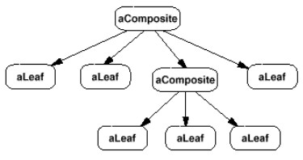
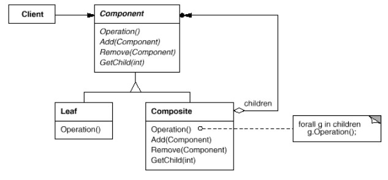
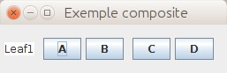

But : composer des objets dans une arborescence pour représenter une hiérarchie.
Composite permet au client de traiter les objets terminaux (feuilles) de la même manière que les objets composés (branches).
Diagramme objet d'une structure typique de Composite : 
Structure
Diagramme original (gof) :  Points importants pour ce pattern :-
Les objets individuels (
Leaf) et les objets composés (Composite) dérivent tous les deux de la même classe (Component).
Cela permet au client de n'avoir à traiter qu'avec desComponent, sans avoir besoin de se soucier de savoir s'ils sont terminaux ou pas. -
Les objets composés ont un membre,
children, qui est une collection deComponent. -
La seule méthode que doivent implémenter objets terminaux ET objets composés est
operation().
Dans le cas d'un objet composé, cette méthode ne fait rien de plus qu'appeler la méthodeoperation()de chacun de seschildrenfor(Component child : children){ child.operation(); }(elle peut aussi faire d'autres choses si besoin).
Cet appel récursif est au coeur du mécanisme du pattern Composite.
Component soit une classe abstraite, ce qui permet à Leaf de ne pas avoir à se soucier des méthodes spécifiques aux objets composés
(parce que
Component fournit des implémentations vides des méthodes).
abstract class Component{
public abstract void operation();
public addChild(){}
public removeChild{}
public getChildren(){ return new ArrayList(); }
}
La structure formée par la hiérarchie des
Component est un arbre.
Exemples
GOF diagram
Exemple simple utilisant le vocabulaire du diagramme GOF :
import java.util.List;
import java.util.ArrayList;
public class GOFDiagram1 {
public static void main(String[] args) {
Component root = new Composite("root");
Component node1_1 = new Composite(" composite 1.1");
Component node1_1_1 = new Leaf(" leaf 1.1.1");
Component node1_1_2 = new Leaf(" leaf 1.1.2");
Component node1_2 = new Composite(" composite 1.2");
Component node1_2_1 = new Leaf(" leaf 1.2.1");
Component node1_2_2 = new Composite(" composite 1.2.2");
Component node1_2_2_1 = new Leaf(" leaf 1.2.2.1");
Component node1_2_2_2 = new Leaf(" leaf 1.2.2.2");
root.addChild(node1_1);
node1_1.addChild(node1_1_1);
node1_1.addChild(node1_1_2);
root.addChild(node1_2);
node1_2.addChild(node1_2_1);
node1_2.addChild(node1_2_2);
node1_2_2.addChild(node1_2_2_1);
node1_2_2.addChild(node1_2_2_2);
root.operation();
}
}
abstract class Component {
protected String name;
public Component(String name){ this.name = name; }
public abstract void operation();
public abstract void addChild(Component c);
}
class Leaf extends Component{
public Leaf(String name){ super(name); }
public void operation(){ System.out.println(name); }
public void addChild(Component c){ }
}
class Composite extends Component{
private List<Component> children = new ArrayList<>();
public Composite(String name){ super(name); }
public void operation(){
System.out.println(name);
for(Component child : children){
child.operation();
}
}
public void addChild(Component child){ children.add(child); }
}
(code dans GOFDiagram1.java)
java GOFDiagram1
root
composite 1.1
leaf 1.1.1
leaf 1.1.2
composite 1.2
leaf 1.2.1
composite 1.2.2
leaf 1.2.2.1
leaf 1.2.2.2
Remarquer que l'affichage de l'arborescence dans le code client se fait en une seule instruction : root.operation();
Note : dans ce cas précis, on pourrait simplifier et avoir une seule classe pour
Composite et Leaf, car operation() fait exactement la même chose dans les deux cas. Voir une implémentation simplifiée dans GOFDiagram2.java.
Mais ce n'est pas possible en général ; voir par ex exercice Sommateur.
N.B. Pour les exercices, vous pouvez démarrer avec un copier - coller
Partir des exemples
Partir des exemples
GOFDiagram1 (composites "de base") ou GOFDiagram3 (composite avec lien au parent).
Exercice : Sommateur
Swing
Les toolkits graphiques utilisent très fréquemment ce pattern.Exemple avec swing :
import java.awt.*;
import javax.swing.*;
class Swing{
public static void main(String[] args){
JFrame frame = new JFrame("Exemple composite");
JPanel contentPane = new JPanel();
JTextArea text1 = new JTextArea("Leaf1");
contentPane.add(text1);
JPanel panel1 = new JPanel();
panel1.add(new JButton("A"));
panel1.add(new JButton("B"));
JPanel panel2 = new JPanel();
panel2.add(new JButton("C"));
panel2.add(new JButton("D"));
panel1.add(panel2);
contentPane.add(panel1);
frame.setContentPane(contentPane);
frame.setSize(300,100);
frame.pack();
frame.setVisible(true);
}
}
(code dans Swing.java)


operation() est ici add().
On utilise
add() de la même manière pour un objet simple que pour un objet composé.
Référence au parent
A de nombreuses applications.L'exemple GOFDiagram3.java affiche exactement la même chose que
GOFDiagram1 avec une implémentation différente :
Dans
main(), les noms des composants ne débutent plus par des espaces :
Component node1_1 = new Composite(" composite 1.1");
devient
Component node1_1 = new Composite("composite 1.1");
Pour afficher les espaces, on utilise une référence au noeud parent ; voir les commentaires dans le code pour plus de détails.
Cette référence permet de calculer la profondeur de l'élément dans la hiérarchie :
abstract class Component {
protected String name;
protected Component parent = null;
public Component(String name){ this.name = name; }
public void operation(){
System.out.println(String.join("", Collections.nCopies(getLevel(), " ")) + name);
}
public void addChild(Component c){}
public Component getParent(){ return parent; }
public void setParent(Component parent){ this.parent = parent; }
public int getLevel(){ return parent == null ? 0 : parent.getLevel() + 1; }
}
Leaf ne change pas, mais Composite.addChild() oui :
class Composite extends Component{
// ...
public void addChild(Component child){
children.add(child);
child.setParent(this);
}
}
Exercice : Suppression d'une partie de l'arbrorescence
Exercice : Bibliothèque
Remarques
- Récursif.
-
On peut facilement ajouter de nouveaux types de composants. L'ajout d'une sous-classe de
Componentfonctionnera sans aucune modification duComponentou des autres classes du composite. -
Certaines variantes de Composite ajoutent à l'interface
Componentune méthodegetParent().
Cette référence explicite au parent peut être utile pour remonter dans la structure, effacer un composant.
Facilite l'utilisation de Composite dans une Chain of Responsability. -
Le but est de faciliter la vie au client, qui utilisera les mêmes méthodes pour les objets terminaux ou composés.
DoncComponentdoit fournir une interface aussi complète que possible.
Mais conflit avec le principe disant que les super-classes ne doivent définir que des opérations qui ont du sens pour les sous-classes.
Penser à :abstract class Animal{ public abstract void parler(); } class VersDeTerre extends Animal{ public void parler() { /* ??? */ } }Dans un composite, des méthodes commegetChild(),addComponent(),removeComponent()n'ont pas de sens pour un objet terminal.
Problème métaphysique, on peut s'en sortir en voyant un objet terminal comme un objet composé sans enfants... - Précautions particulières à prendre si l'ordre de parcours des enfants est important.
- Dans certains cas, des mécanismes de cache sont utilisés : cacher des infos des composants pour éviter de parcourir plusieurs fois, ou chacher des infos permettant d'accéder rapidement aux composants sans avoir à parcourir.
Liens avec d'autres patterns
-
Decorator est souvent utilisé avec Composite.
Lorsque décorateurs et composites sont utilisés ensemble, ils ont en général une classe parente commune.
Donc les décorateurs devront se conformer à l'interfaceComponentavec des opérations commeaddChild(),removeChild(),getChild(). - Iterator peut être utilisé pour parcourir des composites.
-
Visitor isole des opérations et comportements qui seraient sinon pris en charge par les sous-classes de
Component. - Flyweight permet de partager des composants, mais ils ne peuvent plus référencer leurs parents.
- Une référence explicite des composants vers leur parent est utilisée dans un Chain of Responsibility.
- Interpreter peut utiliser Composite.